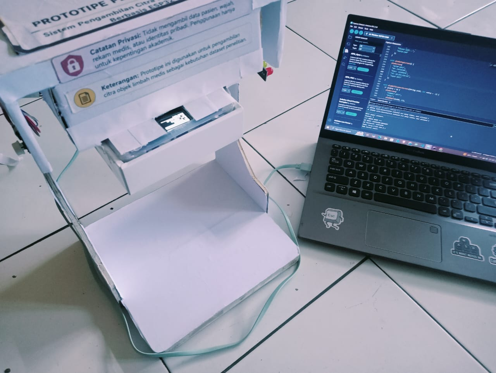
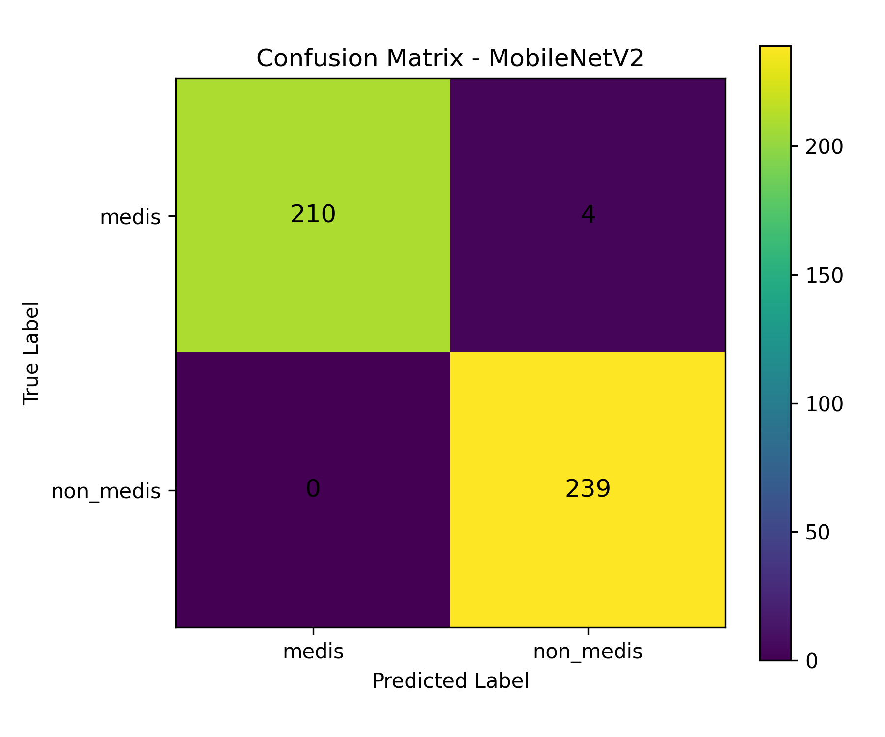

Medical waste sorting fails in ways that are hard to prove after the fact
Medical waste can carry infectious material, sharps, and other hazards, and it's supposed to be sorted correctly at the source. In practice, that sorting is inconsistent: limited bins, rushed staff, unclear labeling. When something goes wrong, there's rarely a photographic record of what actually happened.
That's the gap this project tries to close: a device that photographs waste automatically at the point of disposal, and a model that gives a first-pass read on what's in frame. Not a replacement for trained judgment, just a documented trail and a rough sanity check.
(1,500 medical / 1,500 non-medical)
photographed
trained & compared
per image
Three pieces, built and tested separately
The acquisition device, the model training pipeline, and the web app were developed as independent stages, each verified before wiring it into the next. That made it much easier to isolate bugs later.
 Overall system architecture — three subsystems, source: author's own design (2026)
Overall system architecture — three subsystems, source: author's own design (2026)
- Acquisition & loggingThe ESP32-CAM captures a waste photo, ships it over Wi-Fi to a Node.js/Express backend, which stores the file on Cloudinary and writes local metadata for tracking.
- Model experimentsThe collected dataset gets audited and split by physical object, then used to train SimpleCNN, AlexNetMini, and MobileNetV2 — followed by robustness testing and TensorFlow Lite quantization.
- Classification web appThe chosen TFLite model runs behind a small inference service. A user uploads or captures a photo and gets back an indicative label.
An ESP32-CAM rig, assembled by hand
The physical unit is an ESP32-CAM with an OV2640 camera, a manual trigger button, an OLED status screen, and three status LEDs, all driven by C/C++ firmware in the Arduino IDE.

How a capture actually happens
Pressing the trigger button captures a JPEG at 640×480, holds it briefly in device memory, then sends it to the backend as an HTTP POST. The OLED screen shows Wi-Fi status, whether the camera is ready, and whether the last upload succeeded; the yellow and green LEDs back that up visually from across the room.
| Part | Role |
|---|---|
| ESP32-CAM | Captures and sends images over Wi-Fi |
| OV2640 camera | Image sensor for the waste photos |
| Trigger button | Starts a capture manually |
| OLED (SSD1306) | Shows device and upload status |
| Red / yellow / green LEDs | Secondary status indicators |

The assembled prototype, held in a cardboard test rigWhat broke, and what fixed it
Early testing surfaced the usual field problems: an unstable power supply, the camera occasionally failing to initialize, and Wi-Fi dropping mid-session. Switching to a more stable power source and adding an automatic reconnect routine to the firmware cleared most of it up.
After those fixes, the device reliably captured one image per trigger and delivered it to the backend and Cloudinary without manual intervention.
Tools and libraries
3,000 photos, tracked back to their source object
Every image is logged with a label, a SHA-256 hash, an object ID, and its Cloudinary URL, all searchable from a small documentation dashboard. The train/val/test split is done by object_id rather than by image, so the same physical item never leaks across splits.


SimpleCNN, AlexNetMini, and MobileNetV2, trained head to head
All three models were trained and evaluated on the same dataset split, the same input size, and the same procedure, so the comparison is actually fair.
| Model | Accuracy | Precision | Recall | F1 | AUC |
|---|---|---|---|---|---|
| SimpleCNN | 76.04% | 76.19% | 100% | 86.49% | — |
| AlexNetMini | 43.03% | 43.03% | 100% | 60.17% | — |
| MobileNetV2 | 97.31% | 96.61% | 97.16% | 96.88% | 99.25% |

MobileNetV2 confusion matrix227 TN · 171 TP · 6 FP · 5 FN
The perfect recall on SimpleCNN and AlexNetMini is misleading on its own: both came with a lot of false positives, meaning they weren't actually separating the non-medical class well. MobileNetV2 was chosen because it's the only one balanced across every metric, not just recall.
The honest finding here is a limitation, not a win. Under a combined robustness test (brightness, contrast, blur, and noise applied together), MobileNetV2's accuracy dropped to 50.12% and recall to 17.61%, with 145 false negatives. That's a real ceiling on how much this model can be trusted outside a fairly controlled shooting setup, and it's the main thing I'd want to fix before this goes anywhere near a real deployment.
Converting to TensorFlow Lite without losing accuracy
MobileNetV2 was converted to three TFLite variants and compared on accuracy, file size, and inference time.
| Format | Accuracy | File size | Inference |
|---|---|---|---|
| Float32 | 97.31% | 8.64 MB | ~12 ms |
| Float16 used in the app | 97.31% | 4.25 MB | 9.92 ms |
| Full-integer INT8 | lower | ~2.3 MB | fastest |
Float16 kept every metric identical to the original Keras model (97.16% recall, 96.88% F1) while cutting the file size roughly in half. INT8 was smaller and faster still, but the accuracy trade-off wasn't worth it for a model that already has to work harder than it should under imperfect lighting. Float16 was the more sensible default for a CPU-only inference service.
Where the photo actually turns into a label
The Float16 model runs behind a small FastAPI inference service, called by the web app. The ESP32-CAM only handles capture; classification happens as a separate step.


Get an image in
Upload a file, take a photo directly, or pull one from the ESP32-CAM gallery.
Run inference
The image is sent to the FastAPI service running the Float16 TFLite model.
Read the result
A medical / non-medical label comes back with a confidence score and the inference time.
To be clear: the output is labeled indicative on purpose. It's meant to support a first look based on visual traits, not to make medical or waste-disposal decisions on its own.